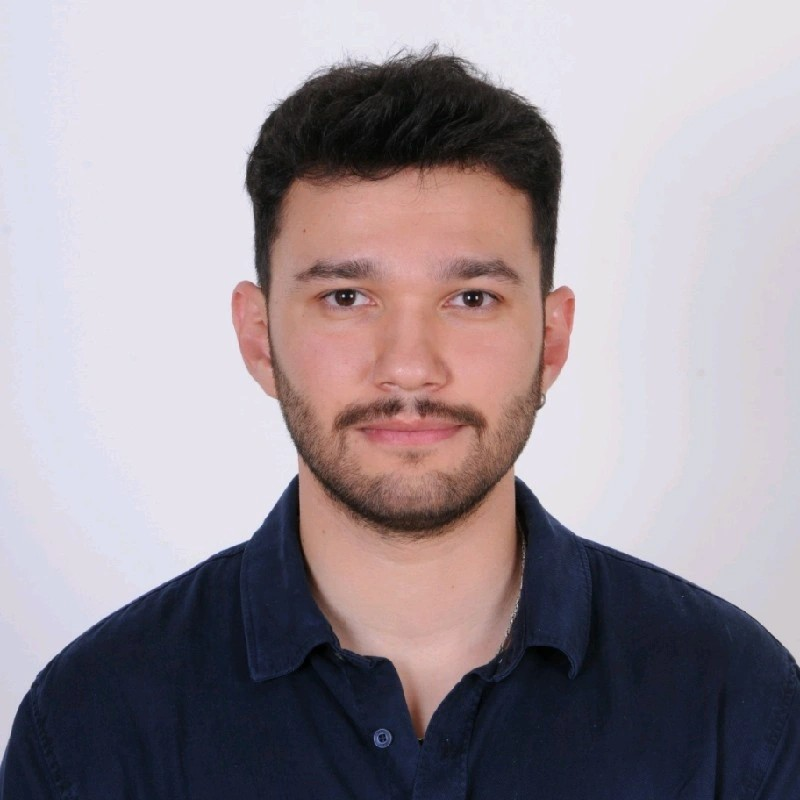

Geographic Information Systems
GIS workflows for spatial data modelling, layer analysis and map production.
ITU · GEOMATICS × ELECTRICAL
Where the map measures, the signal resolves.
I am an MSc student in Geomatics Engineering and a BSc student in Electrical Engineering at Istanbul Technical University. I combine remote sensing, InSAR-based deformation analysis and photogrammetry with a foundation in power electronics and signal processing to turn raw data into measurable engineering solutions.

Hello, I am Salih. After graduating from Refik Arslan Öztürk Science High School in Bilecik in 2019 and preparing for another year, I earned a place in the Geomatics Engineering programme at Istanbul Technical University.
In June 2025 I graduated from Geomatics Engineering as second in my department. In September 2023 I joined the Electrical Engineering programme through the double-major scheme, and in July 2025 I was admitted to the MSc programme with thesis in Geomatics Engineering. I am currently studying both at once at ITU.
My work focuses on remote sensing, InSAR-based deformation detection and photogrammetry. My background in power electronics and signal processing directly shapes how I process and interpret data. Through my internships I have worked both in the field on surveying and cadastral applications, and in the lab on InSAR processing and data preparation for deep learning.
Download RésuméFrom collecting and processing spatial data to analysing and interpreting signals, I work end to end.
GIS workflows for spatial data modelling, layer analysis and map production.
Surface analysis with optical and SAR data; deformation detection via InSAR and interferometry.
Energy conversion and charging systems, grounded in the electrical engineering double major.
Filtering, transforming and interpreting measurement data through signal analysis.
3D model generation from imagery; city modelling at LoD levels.
Istanbul Technical University
Istanbul Technical University
Istanbul Technical University
Graduated with a GPA of 3.58 / 4.00 — second in the department.
Bilecik
Enerjisa Spark
Work on EV charging units mounted on lighting poles and portable charging units.
Smart Cities & Partners
Data processing and labelling with StaMPS, Snap2StaMPS and AnyLabeling.
ITU Center for Satellite Communications and Remote Sensing
Interferometry, deformation detection and data preparation for deep learning.
Zirve Surveying & Cadastre Office
Parcelling, field surveying, land consolidation and subdivision applications.
Feel free to get in touch for more detail on any of these projects.
Creating an LoD1 3D city model of the ITU Ayazağa Campus and publishing it on the web.
Open ProjectDetermining surface deformation through the combined use of optical and SAR remote sensing data.
Contact for detailsFundamental surveying and computation; detail surveys using GPS/GNSS techniques alongside terrestrial methods.
Contact for detailsA comprehensive project applying geodetic, photogrammetric and remote sensing methods together.
Contact for detailsPaper presented at the symposium of the Turkish National Union of Photogrammetry and Remote Sensing.
Departmental ranking in the 252nd anniversary graduating class with a GPA of 3.58 / 4.00.
Ranking in the Geographic Information Systems project competition.
Board Member · Technical Trip · 2023–2024
International Society for Photogrammetry and Remote Sensing
International Association of Geodesy
Chamber of Survey and Cadastre Engineers of Türkiye
A project, a collaboration or just an idea — I am happy to talk.
salihtatci@gmail.com